5 Cómo ajustar las dioptrías
5.1 Introducción
En términos muy simples, las dioptrías son la unidad de medida de graduación de los ojos. Es decir, es la medida que indica la potencia que ha de tener una lente para que los ojos puedan enfocar correctamente.
Como usted ya sabe, el desgaste visual es algo frecuente en nuestra sociedad y puede deberse a distintos factores, como la herencia o la edad. Una persona puede tener diferente cantidad de dioptrías en ambos ojos, situación que tiene el potencial de mermar su experiencia en el ejercicio de la microscopía.
Pensando en esto último, algunos microscopios cuentan con un sistema para el ajuste manual de dioptrías. Si usted tiene problemas de visión y tiene distinto desgaste en ambos ojos, siga estas instrucciones para calibrar el microscopio a sus necesidades.
5.2 Procedimiento
En primer lugar, identifique si el microscopio puede realizar este ajuste. Para ello, verifique si en la base del
ocularizquierdo hay una rosca que se gira y que no está presente en el derecho. Si es así, siga con las instrucciones; en caso contrario, el microscopio carece de las capacidades necesarias para realizar este ajuste.Con la mano izquierda, cúbrase el ojo del mismo lado y observe a través del
ocularderecho. Utilizando eltornillo micrométrico, enfoque la imagen hasta que ésta se encuentre perfectamente nítida, según las capacidades del microscopio.Descúbrase el ojo izquierdo, parpadee un poco y cúbrase ahora el derecho. En esta ocasión utilice la rosca ubicada en la base del
ocularizquierdo para hacer el ajuste de enfoque. Por ningún motivo toque los tornillosmacrométricoymicrométrico.Una vez conseguido el enfoque, descúbrase el ojo, parpadee un poco y observe con ambos ojos a través de los
oculares. Si lo hizo correctamente, deberá ver una imagen enfocada en ambos ojos.Si usted es el único usuario del microscopio, no hace falta que repita el procedimiento; pero si lo comparte con una o más personas, deberá repetir estas instrucciones siempre que usted utilice el aparato.
5.3 Diagrama de flujo
